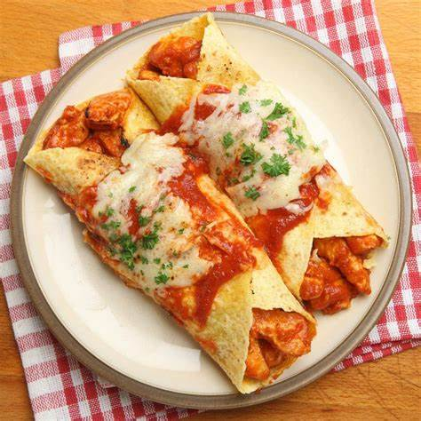

enchiladas

Las enchiladas mexicanas son un plato tradicional y
delicioso de la cocina mexicana que consiste en tortillas
rellenas, generalmente de pollo, carne, queso o frijoles, que se enrollan
y se cubren con una salsa de chile.
Utensillos:
- Sartén grande
- Sartén pequeña
- Espátula o cuchara de madera
- Bandeja para horno
- Horno
- Platos
- Sartén o comal pequeño
- Cucharas
- Cuchillo y tabla de cortar
- Platos y utensilios para servir
- Horno microondas (opcional)
Ingredientes
- 8 tortillas de maíz o trigo (dependiendo de tu preferencia)
- 2 tazas de pollo cocido y desmenuzado (puedes usar pollo, carne, queso o frijoles como relleno)
- 1 taza de queso rallado (queso cheddar, queso Monterey Jack o queso blanco son buenas opciones)
- 1 cebolla pequeña, picada finamente
- 1 lata de crema agria
- Aceite vegetal para freír las tortillas
- Sal y pimienta al gusto
- Para la salsa:
- 2 tazas de salsa roja de enchilada (puedes comprarla enlatada o hacerla casera)
- 1 cucharada de aceite vegetal
- 1 cucharadita de comino en polvo
- 1 cucharadita de chile en polvo (ajuste la cantidad según tu preferencia de picante)
-
¡¡¡¡Instrucciones!!!!
Pasos a seguir:
- Precalienta el horno a 180°C (350°F).
- En una sartén grande, calienta el aceite a fuego medio. Agrega la cebolla picada y cocínala hasta que esté tierna y transparente.
- Agrega el pollo desmenuzado (o el relleno de tu elección) a la sartén y cocínalo durante unos minutos hasta que esté bien caliente. Condimenta con sal y pimienta al gusto.
- En otra sartén, calienta la salsa de enchilada a fuego medio. Agrega el comino en polvo y el chile en polvo, y mezcla bien.
- Calienta las tortillas en una sartén caliente durante unos segundos de cada lado para que estén más flexibles y fáciles de enrollar.
- Rellena cada tortilla con una porción del relleno de pollo y una pizca de queso rallado. Enróllalas y colócalas en una bandeja para horno.
- Vierte la salsa caliente sobre las enchiladas y espolvorea el queso rallado restante por encima.
- Hornea las enchiladas en el horno precalentado durante aproximadamente 15-20 minutos, o hasta que el queso se derrita y las enchiladas estén bien calientes.
- Sirve las enchiladas con una cucharada de crema agria por encima y, si lo deseas, agrega un poco de cilantro fresco picado o cebolla verde.
Información nutrimental
| Por porción 57074.3 kcal = 238kj
|
| Carbohidratos |
Energía |
Grasas |
Fibra |
Proteína |
Grasas Saturadas |
Sodio |
Azúcares |
| 57.6g |
57456.3 kcal |
2338.4 g |
3.9 g |
8102.2 g |
600.2 g |
72135.5 mg |
2.2 g |
¿Quieres otra receta?, CONTÁCTANOS:
Pagina de Martha |
Inicio